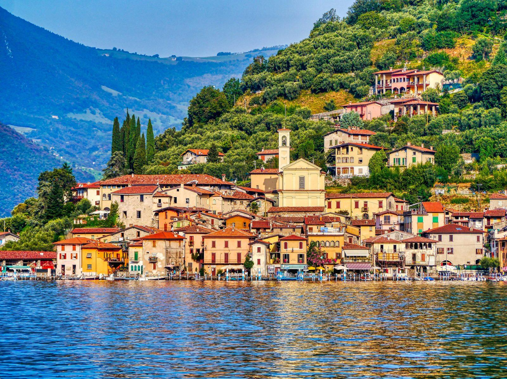
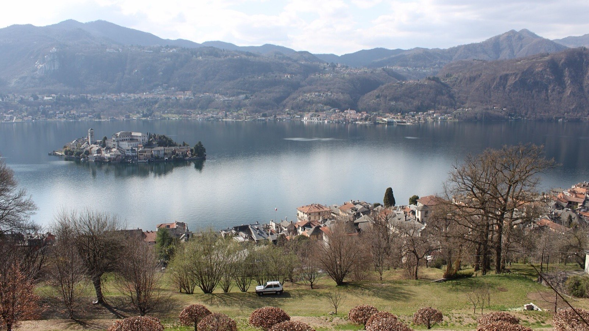
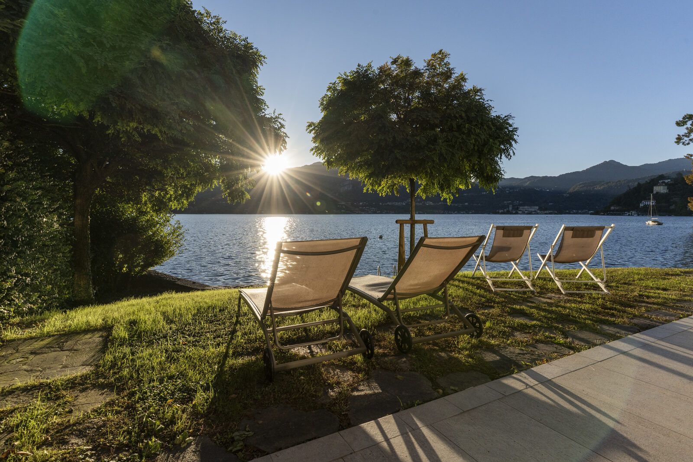

Ask anyone who has already done Lake Como and Lake Garda where to go next, and two names keep coming back: Lake Iseo and Lake Orta. Both are smaller, quieter and better value than the famous lakes, both have an island worth the trip, and both are regularly described as Italy's best-kept secret. They are also two hours apart, in different regions, and much less alike than the "hidden gem" label suggests. Villa Volpe is on the shore of Orta, so we know which one we prefer — but we have tried hard to be fair to Iseo. Here is how they actually compare.
The short answer
Choose Lake Iseo if you want variety: a bigger lake with real towns around it, a car-free island with its own mountain, cycling, and Franciacorta, Italy's great traditional-method sparkling wine, on the doorstep. Choose Lake Orta if you want one exceptionally beautiful village, a lake small enough to feel like your own, and a week that asks very little of you. Iseo is the better lake to explore. Orta is the better lake to stay on.
At a glance
| Lake Iseo | Lake Orta | |
|---|---|---|
| Region | Lombardy (Bergamo and Brescia) | Piedmont (Novara and Verbano-Cusio-Ossola) |
| Size | 65.3 km², 25 km long | 18.2 km², 13.4 km long |
| Deepest point | 251 m | 143 m |
| The island | Monte Isola: 4.5 km², a dozen hamlets, about 1,600 residents, no cars | Isola San Giulio: a basilica and a Benedictine convent, about 275 m long |
| Star village | Lovere; Peschiera Maraglio on Monte Isola | Orta San Giulio, with a car-free centre |
| UNESCO site | Val Camonica rock art, about 40 km north | Sacro Monte di Orta, above the village |
| Food and wine | Franciacorta sparkling wine; baked tench at Clusane | Villa Crespi (three Michelin stars); Ghemme and Boca reds |
| Nearest airport | Bergamo Orio al Serio, about 45 min | Milan Malpensa, about 50 min |
| By train | Brescia to Iseo in about 30 min | Possible, but sparse: a car is better |
| Best for | Exploring, cycling, wine | Slowing down, one perfect village |
Size and crowds
Lake Iseo covers 65.3 square kilometres and runs for 25 kilometres, from Sarnico in the south to Lovere and Pisogne in the north. Lake Orta covers 18.2 square kilometres and is 13.4 kilometres long. Iseo is about three and a half times bigger — and it is no longer much of a secret. The 23 municipalities around it recorded 1.12 million overnight stays in 2025, almost ten per cent more than the year before, nearly half of them in the town of Iseo alone.
Iseo's crowds gather in predictable places: the ferries to Monte Isola, the promenade at Iseo, Lovere on a Sunday. Over the 1 May holiday in 2025 the lake's ferries carried 17,000 passengers in a single day. Away from those spots, and outside summer weekends, Iseo is calm and very pleasant.
Orta is smaller in every sense. Its day visitors converge on one place, the village of Orta San Giulio — about 1,100 residents and a centre closed to traffic. On a summer Sunday afternoon Piazza Motta is busy; the rest of the lake hardly notices. You can see the far shore clearly from your own, and on most mornings the water is completely still.
The islands: Monte Isola or San Giulio
This is the real difference between the two lakes, and the main reason people choose Iseo.

Monte Isola is not an island you visit so much as an island people live on. It covers 4.5 square kilometres, climbs to 600 metres above sea level, and is home to about 1,600 people in a dozen hamlets. It is the largest lake island in southern and central Europe and one of I Borghi più belli d'Italia, the association of Italy's most beautiful villages. Private cars are not allowed: residents get about on mopeds, and a small bus links the villages. At the top, the sanctuary of the Madonna della Ceriola looks out over the whole lake. Peschiera Maraglio, on the eastern shore, has made fishing nets for centuries, and the island's speciality is its sardina, lake shad salted and dried in the sun. Give it a full day, on foot or by bike.
Getting there is easy. Ferries cross from Sulzano to Peschiera Maraglio and from Sale Marasino to Carzano every 15 to 20 minutes, all year round; the crossing takes about five minutes. Since 2025 every passenger also pays a landing contribution of €1.50 a day. And note a new rule: since March 2026, bicycles and e-scooters can no longer be brought onto the island or ridden there on public holidays and the days before them between March and September, nor on any day in August, unless you are staying on the island. On those days Monte Isola is for walkers.
Isola San Giulio is the opposite: a tiny island, about 275 metres long, almost entirely taken up by a Romanesque basilica and a convent of Benedictine nuns founded in 1973. A single lane runs round it, signed as the Way of Silence in one direction and the Way of Meditation in the other. Boats leave Piazza Motta in Orta San Giulio every few minutes in season, and an hour is enough to see it all. What it lacks in size it makes up for in presence: seen from the village, floating in the middle of the lake, it is one of the great views of northern Italy. We have written about the legend behind it too.
Atmosphere: lakeside towns or one perfect village
Iseo is a lake of towns. Lovere, at the northern end, is another of Italy's most beautiful villages and has a serious art collection at the Accademia Tadini, founded in 1828. Sarnico, at the southern tip, is where Pietro Riva started building boats in 1842 — the family name that became shorthand for the varnished mahogany runabout. Pisogne has a small church, Santa Maria della Neve, frescoed by Romanino so completely that it is known as the Sistine Chapel of the poor. Iseo itself is a proper lakeside town with a castle, a market and a long promenade. It all feels lived-in, a little industrial at the edges, and very Lombard.

Orta has one great village, and it knows it. Orta San Giulio is also one of I Borghi più belli d'Italia and holds the Touring Club's orange flag. Its centre is entirely pedestrian: cobbled lanes, frescoed palazzi and balconies over the water, all leading down to Piazza Motta and the view of the island. In the wood on the hill above, the Sacro Monte di Orta is a UNESCO World Heritage Site — twenty chapels built between the late sixteenth and late eighteenth centuries, filled with life-size terracotta figures telling the story of Saint Francis. The rest of the lake is quiet villages, chestnut woods and small beaches. It feels Piedmontese: understated, a little reserved, in no hurry at all.
Food and wine
Here Iseo holds a trump card. The hills between its southern shore and Brescia are Franciacorta, Italy's answer to Champagne: a DOCG since 1995, with more than 120 producers, including Ca' del Bosco, Bellavista and Berlucchi, where the first Franciacorta was made in 1961. A lake holiday with a winery visit every afternoon is very easy to arrange. On the lake itself, look for tinca al forno con polenta, the baked tench of the fishing village of Clusane, and Monte Isola's dried shad.
Orta answers with a kitchen rather than a wine region. Villa Crespi, Antonino Cannavacciuolo's restaurant in a Moorish villa just outside Orta San Giulio, holds three Michelin stars. The plain towards Novara is Gorgonzola country — Piedmont makes about seven in every ten wheels — and, together with Vercelli and Pavia, it grows almost 80% of Italy's rice. The hills to the south make Nebbiolo reds — Ghemme and Boca — that are far less famous than Barolo and far better value. We have put together a full guide to where to eat on Lake Orta, from trattorias to the stars.
Things to do
Iseo gives an active traveller more to do. Cycle along the shore — though the best-known stretch, the lakeside path between Vello and Toline, has been partly closed since a landslide in September 2026, so check before you go. Walk the reed beds of the Torbiere del Sebino nature reserve at the southern end. Swim in the cliff-ringed cove of Bogn di Zorzino. Drive about forty kilometres north into the Val Camonica to see the prehistoric rock carvings around Capo di Ponte, which in 1979 became Italy's first UNESCO World Heritage Site.
Orta rewards a slower pace. Walk up to the Sacro Monte in twenty minutes. Take the boat to the island. Climb to the Madonna del Sasso, the balcony above the western shore with the widest view of the lake. Swim from one of the small beaches or straight from a garden. And when you want something bigger, Lake Maggiore and Stresa are a short drive away. Our guide to walking around Lake Orta has the trails.
Getting there
Each lake is easiest from a different airport. Iseo is about 45 minutes by car from Bergamo Orio al Serio, the big low-cost hub, and has a direct train from Brescia that takes around half an hour. Orta is about 50 minutes from Milan Malpensa and is best reached by car: there is a local train, but it is sparse, as we explain in our guide to getting to Lake Orta. From central Milan, both lakes are roughly an hour and a half away by car.
Once you are there, Iseo's ferries link most of its shore, so a car is optional if you are happy to live by the timetable. On Orta, if you stay on the eastern shore, you can leave the car parked for days and walk to the village, the beaches and the boats to the island.
Cost
Neither lake is expensive by the standards of Como or Garda. On Iseo the cost that catches people out is parking: at Sulzano, the main ferry point for Monte Isola, expect to pay around €10 a day, and the car parks fill early on summer weekends. On Orta it is the view: a table on Piazza Motta costs more than the same dinner one lane back.
When Iseo is the better choice
Choose Iseo if you are flying into Bergamo; if you want an island to explore for a whole day rather than an hour; if you want to cycle; if Franciacorta is reason enough on its own; or if you like a lake with real towns, markets and everyday life around it.
When Orta is the better choice
Choose Orta if you are flying into Malpensa or driving down from Switzerland; if you want the prettiest single village of the two; if you are coming for rest rather than an itinerary; if you are travelling with small children, a dog or someone who uses a wheelchair and want a base that is easy rather than eventful; or if one memorable dinner matters more to you than a wine route.
Can you do both?
Not in a day. The drive between the two is about 170 kilometres — a little over two hours without traffic, most of it on the motorways around Milan. If you have two weeks, split them: a week on each, with Milan or Bergamo in between. If you have one, pick the lake that matches the holiday you want, not the one with the longer list.
If you choose Orta

Villa Volpe is a single-storey house on the sunny eastern shore, just outside Orta San Giulio: two king-size bedrooms, a living room and kitchen facing the lake, a garden that runs down to a private beach, and parking at the door. It is fully wheelchair accessible and dogs are welcome. The village is a short walk away, and in the evening the lake is yours. See the house on the Discover page.
The verdict
Lake Iseo is the more varied lake, and Monte Isola is one of the great sights of the Italian lakes. Lake Orta is the more beautiful small place, and the easier one to fall into a rhythm on. If your idea of a lake holiday is a different town every day, go to Iseo. If it is coffee by the water in the morning, a swim before lunch and the island catching the last light in the evening, come to Orta. We would say that, of course. But we have been to Iseo, and we still came home happy.
We have compared Orta with the bigger lakes too: Lake Como, Lake Garda and Lake Maggiore.
Questions people ask
Which is bigger, Lake Iseo or Lake Orta?
Lake Iseo, by some distance: 65.3 square kilometres and 25 kilometres long, against 18.2 square kilometres and 13.4 kilometres for Lake Orta. Iseo is about three and a half times larger.
How far apart are Lake Iseo and Lake Orta?
About 170 kilometres by road, a little over two hours by car without traffic. That is too far for a comfortable day trip; if you want both, split your stay.
Can you take a car to Monte Isola?
No. Private cars are not allowed on Monte Isola. You cross on the ferry from Sulzano or Sale Marasino and get around on foot, by the island bus or by bike — except on public holidays and the days before them from March to September, and every day in August, when visitors' bikes and e-scooters are not allowed.
Which lake is closer to Milan?
Both are roughly an hour and a half from central Milan by car. Iseo is closer to Bergamo airport, Orta to Milan Malpensa.
Which is better for a quiet holiday?
Both are quieter than Como or Garda. Orta is smaller and calmer overall; Iseo is busiest around Monte Isola and on summer weekends, and peaceful elsewhere.
Cover photos: Monte Isola, Marko Lehikoinen (Unsplash) and Isola San Giulio, Rino Adamo (Pexels).